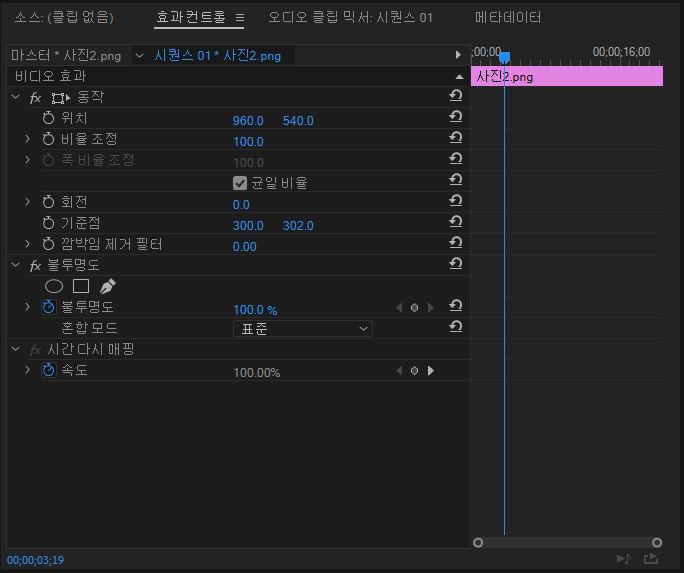
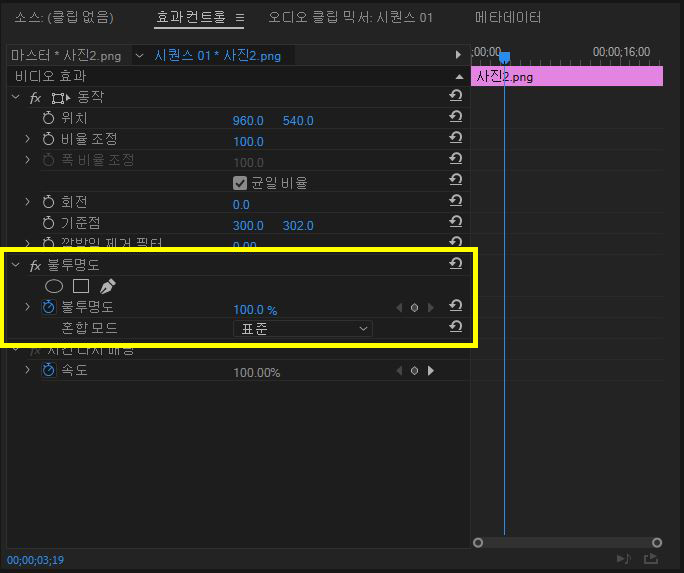
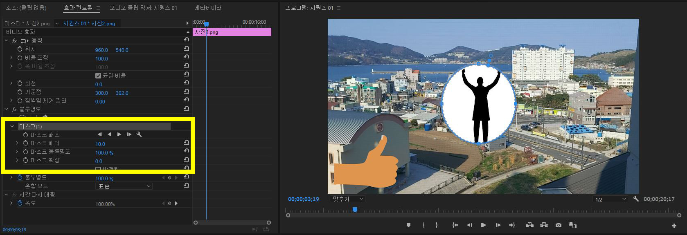
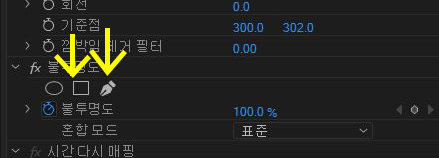
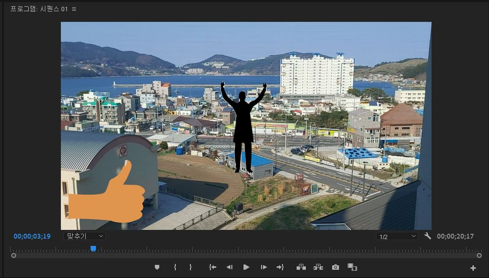
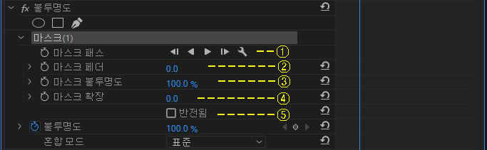

마스크 사용하기
마스크는 premiere pro에서 정말 중요한 기능 중 하나로
주로 합성을 할 때 많이 이용됩니다.
우선 마스크를 사용하기 위해 사진을 하나 추가해 보았습니다.
그리고 효과 컨트롤로 이동해줍니다.

효과 컨트롤 중에서 노란색 박스로 표시된 이 부분이
바로 '마스크'입니다.
저 동그라미를 클릭해봅시다

그러면 마스크(1)이라는 것이 생기면서
화면 속 사진이 동그라미 모양으로 변합니다.
자 이렇게 마스크의 역할은 영상이나 사진을 원하는 만큼 잘라주는 것입니다.

네모는 네모 모양으로 잘라주고,
펜 모양은 여러분이 그린 모양으로 잘라줍니다.
펜으로 마스크를 만들 때는 위 사진처럼 마우스로 하나씩 찍으면서 그리셔야 합니다.
저는 마스크를 이용해서 사진의 사람만 잘라내보았습니다.

그리고 마스크의 세부적인 기능들을 살펴보면
1 -> 마스크 이동 애니메이션 넣기
2 -> 마스크 가장자리 흐리게 하기
3 -> 마스크 잘라낸 부분 투명도 조절
4 -> 마스크 크기 조절
5 -> 잘라낸 부분과 바꿔치기
대충 이정도로 생각하시면 될 것입니다.
다음은 '효과 창 이용해보기' 입니다.